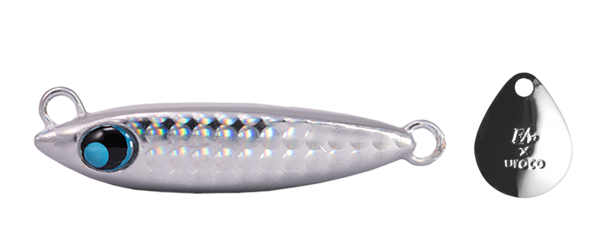
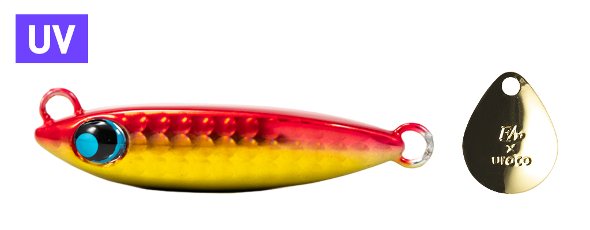
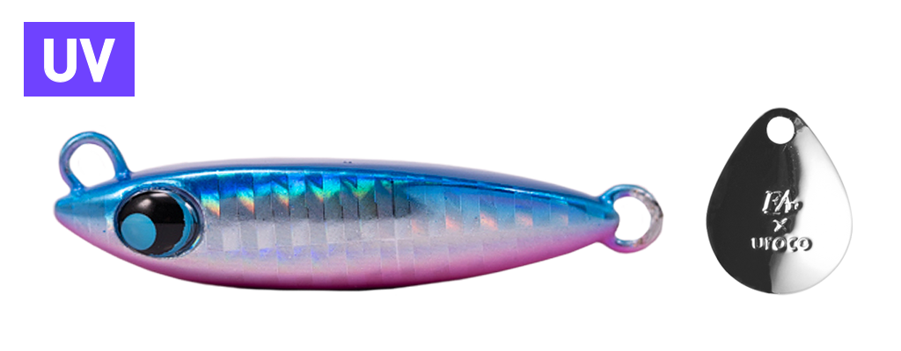
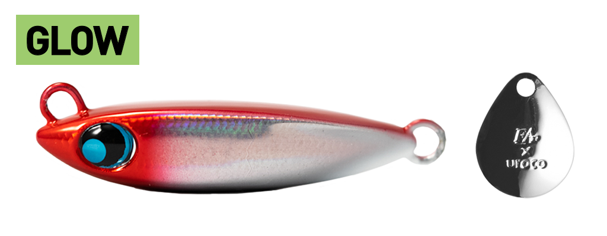

コロジグブレード
（COROJIG BLADE）
コロジグブレードはFish Arrow（フィッシュアロー）とUROCO（ウロコ）のコラボレーションで生まれたブレードジグです。
コンパクトで浮き上がりにくいシルエットのボディは、飛距離が出るうえ、早巻きでの安定性が抜群。テールのブレードがキラメキと波動を出し、サワラ・サゴシや青物に強くアピールします。

画像出典:Fish Arrow公式HP
スペック
- メーカー
- Fish Arrow（フィッシュアロー）× UROCO（ウロコ）
- タイプ
- ブレードジグ
- 重さ
- 30g・40g・50g・60g
- ターゲット
- サワラ・サゴシ・青物
- 価格
- 1,100円（30g・40g）／1,200円（50g・60g）（税別）
▼今すぐチェック

コロジグブレードの特徴
小粒で浮き上がりにくく、早巻きでもブレないブレードジグ
-
コンパクトで浮き上がりにくいシルエット
重さの割に小さいコンパクトなボディで、早く巻いても浮き上がりにくい形状。狙ったレンジを早巻きで長く引けます。
-
飛距離と早巻きでの安定性
空気抵抗の少ない小粒ボディで飛距離が出せるうえ、早巻きでも姿勢が崩れにくいのが特徴。ブレードジギングの基本である「速く巻き続ける」釣りがしやすいジグです。
-
UV・グローを含む全12色
ウロコらしいリアル系のシルバーから、UVやグローの入ったアピール系まで12色を展開。天候や潮色に合わせてローテーションできます。
コロジグブレードの使い方
キャストしてボトムを取ったら、すぐに高速でただ巻きするのが基本。サワラは追ってきても途中で見切ることがあるので、巻きスピードを落とさずに一定で巻き続けます。
反応が渋いときは、巻きの途中でストップを入れてフォールさせ、食わせの間を作りましょう。
コロジグブレードの得意な状況
ボートからのサワラキャスティングや、堤防・サーフからのサゴシ・青物狙い。ベイトが小さいときや、潮が速くてほかのブレードジグが浮き上がってしまうときに、小粒なシルエットのまま狙いのレンジを引けるブレードジグです。
ワンポイント
より深い場所や潮の速い場所向けに、重いウエイトの「コロジグブレード 80〜120g」もあります。ロングシルエットのベイトに合わせたいなら、細身のコロジグブレードスリムと使い分けるのもおすすめです。
重さの使い分け
| 重さ | 価格（税別） | 使いどころ |
|---|---|---|
| 30g | 1,100円 | 堤防・サーフのショアゲームや、浅い場所に |
| 40g | 1,100円 | ショアでもボートでも使いやすい基準の重さ |
| 50g | 1,200円 | ボートのサワラキャスティングに |
| 60g | 1,200円 | 水深がある場所や、潮が速いときに |
さらに重い80〜120gのモデルや、細身の「コロジグブレードスリム」もあります。
人気カラー
全12色のラインナップから4色を紹介します（カラー名は公式の表記のまま）。

#001 ウロコシルバーウロコ模様のリアルなシルバー。澄み潮の日中や、イワシがベイトのときに。

#004 アカキンUV入りのアカキン。朝夕のマヅメ時や、濁りのある日に。

#006 ブルピンUV入りのブルピン。青物・サワラ狙いの定番カラーとして。

#008 レッドヘッドエンドグローレッドヘッドにグローを入れたカラー。夜明け前や、ローライト時に。
画像出典:Fish Arrow公式HP
コロジグブレードに似ているルアー
-
 ドラッグメタル ブレッチ
DUO
詳細はこちら＞
ドラッグメタル ブレッチ
DUO
詳細はこちら＞
30〜50gの小粒なサワラ専用ブレードジグ。同じくらいのサイズで、ダブルフックでしっかり掛けたいときに。
-
 ジャックアイマキマキ
ハヤブサ
詳細はこちら＞
ジャックアイマキマキ
ハヤブサ
詳細はこちら＞
巻くだけで使えるブレードジグ。ショアからの青物・サワラ狙いのローテーションに。
-
 コロジグブレードスリム
ウロコ
詳細はこちら＞
コロジグブレードスリム
ウロコ
詳細はこちら＞
同じコロジグシリーズの細身モデル。40〜120gで、ロングシルエットのベイトや深場を狙うときに。